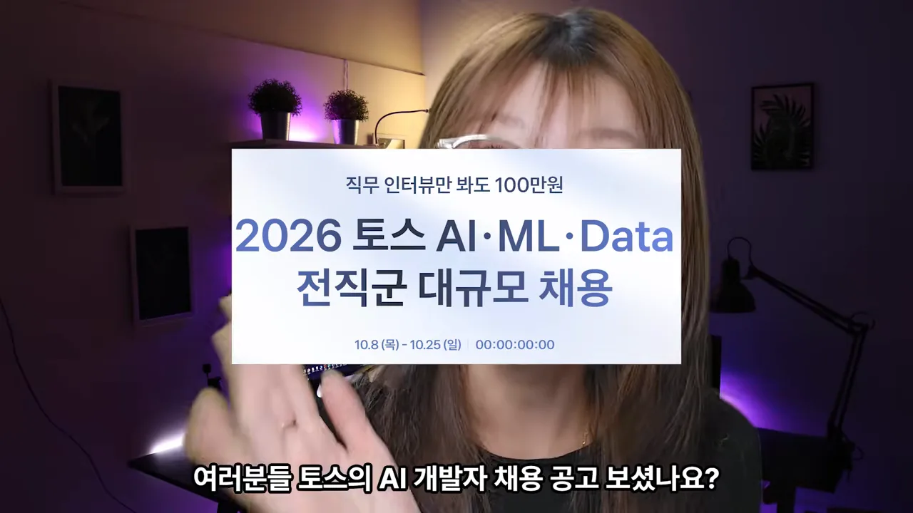
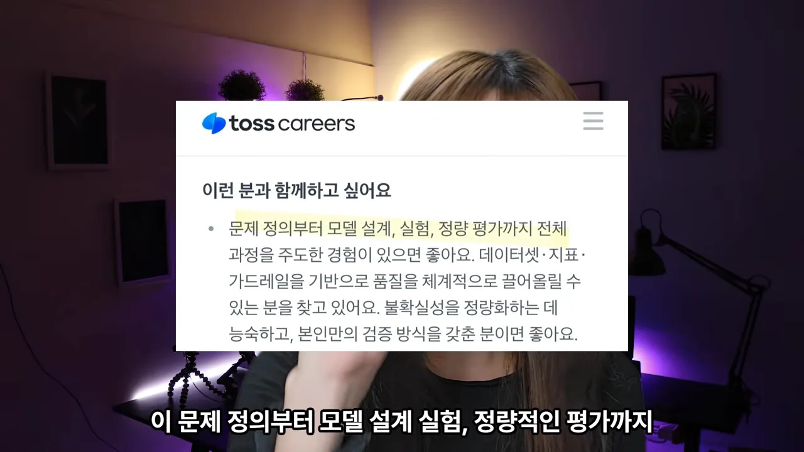
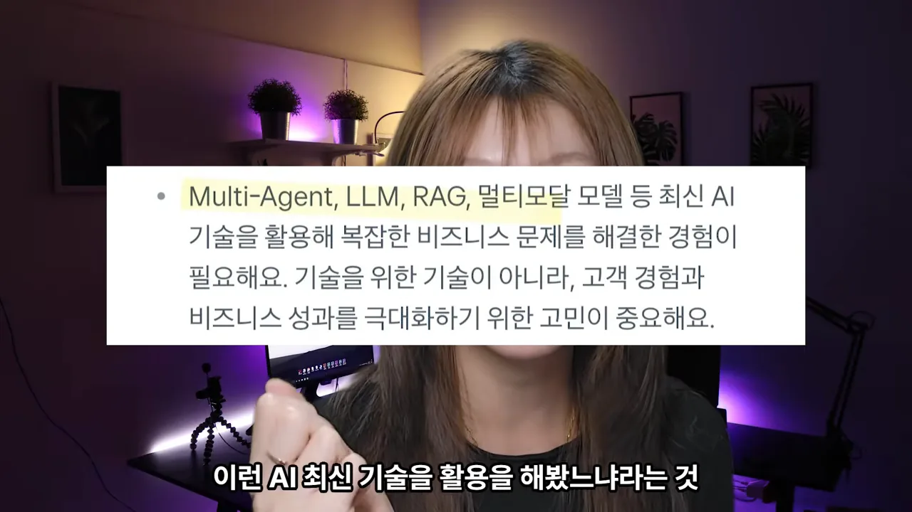
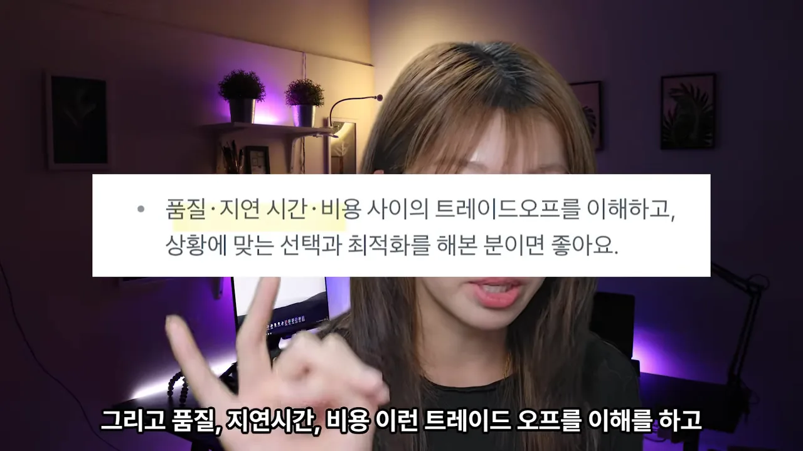
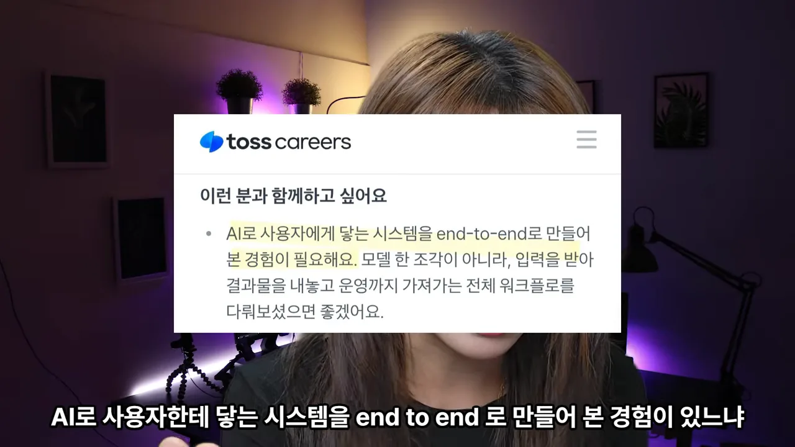
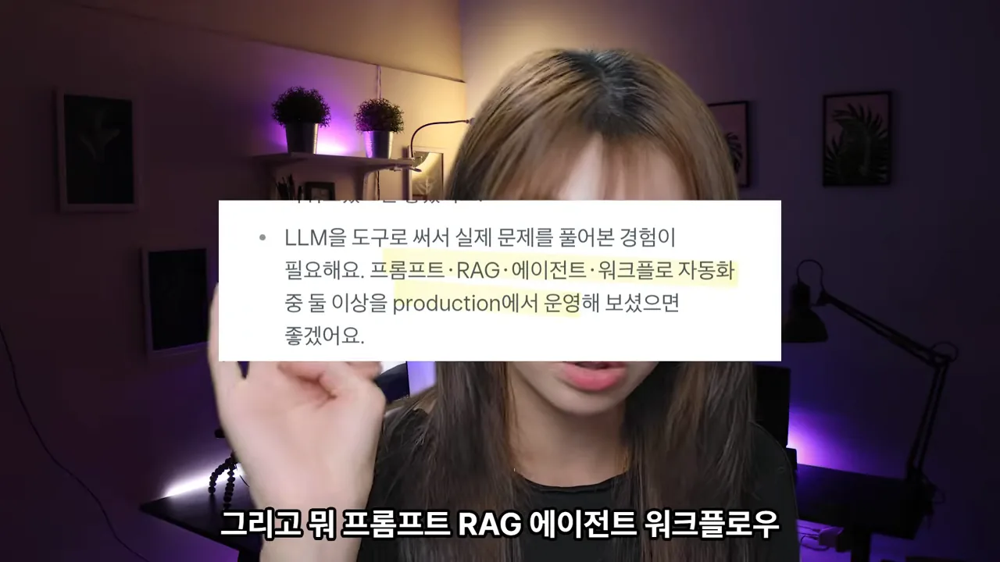
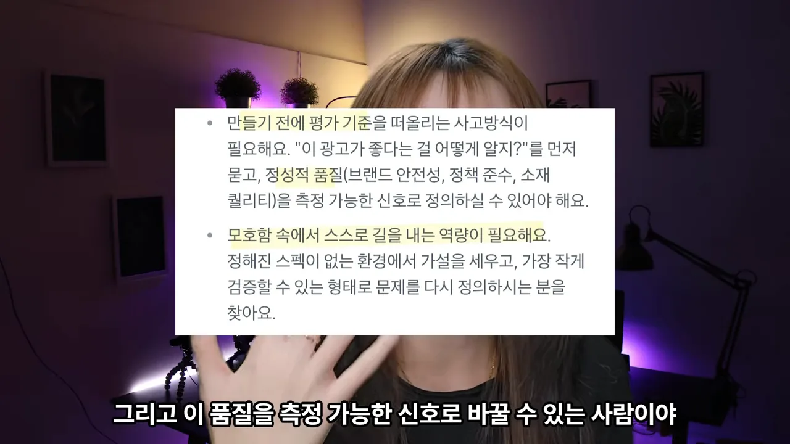
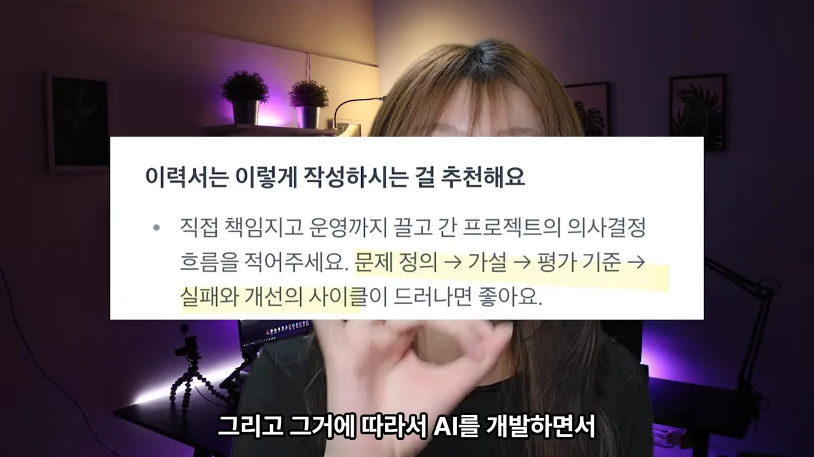

토스 AI 공고가 찾는 사람
영상은 토스의 AI 개발자 채용 공고 이야기로 시작해요. 화면에 뜬 공고 배너 맨 위에 '직무 인터뷰만 봐도 100만원'이라는 조건이 적혀 있어요. 그 아래 큰 글씨가 '2026 토스 AI·ML·Data 전직군 대규모 채용'이고, 맨 아래 작은 글씨가 접수 기간 10.8(목)–10.25(일)이에요.

발표자는 이 공고들이 어떤 사람을 찾는지 읽어 봤어요. 포지션은 여럿인데 하는 말은 거의 같았다고 해요. 첫 번째 공고의 '이런 분과 함께하고 싶어요' 항목을 보면, 노란 형광펜이 '문제 정의부터 모델 설계, 실험, 정량 평가까지 전체'에 칠해져 있어요. 한 조각만 맡은 경험이 아니라 처음부터 끝까지 이끈 경험을 찾는다는 뜻이에요.

다음 항목은 기술 목록이에요. 형광펜이 'Multi-Agent, LLM, RAG, 멀티모달'에 칠해져 있어요. 그런데 문장 뒤쪽이 더 중요해요. 기술을 위한 기술이 아니라 고객 경험과 비즈니스 성과를 키우려는 고민이 중요하다고 적혀 있어요. 영상에서는 멀티 에이전트라고 불러요.

마지막 요구는 균형 감각이에요. 화면의 문장은 '품질·지연 시간·비용 사이의 트레이드오프를 이해하고, 상황에 맞는 선택과 최적화를 해 본 분'이에요. 더 좋은 모델을 쓰면 품질은 오르지만 응답이 느려지고 돈이 더 들어요. 이 셋 사이에서 어디를 고를지 정해 본 경험을 보는 거예요.

두 번째 공고도 같은 말을 해요
두 번째 AI 개발자 공고도 결이 같아요. 첫 항목은 'AI로 사용자에게 닿는 시스템을 end-to-end로 만들어 본 경험'이에요. 모델 한 조각이 아니라 입력을 받아 결과물을 내놓고 운영까지 가져가는 전체 워크플로를 다뤄 봤는지 물어요.

이어지는 항목에는 구체적인 기술이 나와요. 형광펜이 '프롬프트·RAG·에이전트·워크플로 자동화'와 'production에서 운영'에 칠해져 있어요. 넷 중 둘 이상을 실제 서비스에서 굴려 봤으면 좋겠다는 거예요. 만들어 본 것과 운영해 본 것을 구분하고 있죠.

여기에 두 가지가 더 붙어요. 화면 위쪽 항목은 만들기 전에 평가 기준부터 떠올리는 사고방식이에요. 공고는 "이 광고가 좋다는 걸 어떻게 알지?"를 먼저 묻고, 정성적 품질을 측정 가능한 신호로 정의할 수 있어야 한다고 써요. 괄호 안 예시는 브랜드 안전성, 정책 준수, 소재 퀄리티예요. 아래쪽 항목은 정해진 스펙이 없는 환경에서 가설을 세우고, 가장 작게 검증할 수 있는 형태로 문제를 다시 정의하는 역량이에요.

두 공고가 묻는 것을 나란히 놓으면 이렇게 겹쳐요.
| 묻는 것 | 첫 번째 공고 | 두 번째 공고 |
|---|---|---|
| 전체 과정 | 문제 정의부터 정량 평가까지 주도 | 사용자에게 닿는 시스템을 end-to-end로 |
| 기술 | Multi-Agent, LLM, RAG, 멀티모달 | 프롬프트·RAG·에이전트·워크플로 자동화 중 둘 이상 |
| 실전 | 품질·지연 시간·비용 트레이드오프와 최적화 | production에서 운영 |
| 평가 | 데이터셋·지표·가드레일로 품질 관리 | 만들기 전에 평가 기준, 품질을 측정 가능한 신호로 |
이력서는 실패와 개선의 사이클로
토스는 이력서를 어떻게 쓰면 좋은지도 공고에 적어 놨어요. 화면 제목은 '이력서는 이렇게 작성하시는 걸 추천해요'예요. 직접 책임지고 운영까지 끌고 간 프로젝트의 의사결정 흐름을 쓰되, 형광펜이 칠해진 '문제 정의 → 가설 → 평가 기준 → 실패와 개선의 사이클'이 드러나게 써 달라고 해요.

발표자가 강조하는 건 마지막 칸이에요. 경험을 나열하는 이력서와 사이클을 보여 주는 이력서는 다르다고 말해요.
저 이거 해 봤어요. 저 RAG 해 봤어요. 저 이런 AI 프로젝트 해 봤어요. 이런 게 아니라 이 실패와 개선의 사이클을 보이게끔 그 이력서를 써 달라고
— 영상 01:41
아래 그림은 이 차이를 나란히 놓은 거예요. 왼쪽은 영상이 부족하다고 한 말들이고, 오른쪽은 공고가 권한 흐름이에요. 오른쪽은 한 번 지나가고 끝나는 줄이 아니에요. 실패하면 가설이나 평가 기준으로 돌아가 다시 고치는 고리예요.
그래서 발표자는 AI를 써 봤다거나 바이브 코딩을 할 줄 안다는 것만으로는 이제 부족하다고 말해요. 에이전트를 직접 설계하고 서비스로 내놓을 수 있는지가 앞으로 개발자에게 요구되는 역량이라는 거예요. 개발자가 아닌 사람에게도 필요하지만, 개발자라면 특히 기술 자체보다 엔드투엔드로 해 본 경험에 집중해야 한다고 봐요.
혼자서는 왜 어려울까요?
말은 쉬운데 해 보면 어렵다고 발표자는 말해요. 이유는 평가예요.
AI가 준 결과물 이게 괜찮은 결과물인지 아닌지 사실 이 평가가 굉장히 주관적이거든요.
— 영상 02:15
내가 괜찮다고 본 응답을 다른 사람은 별로라고 할 수 있어요. 워크플로 전체를 두고도 마찬가지예요. 이 구간은 발표자 얼굴만 나오고 화면 자료가 없어서, 말로 설명한 구조를 그림으로 옮겼어요. 같은 결과물에 대한 두 판단이 부딪히고, 그 차이를 모아야 개선 방향이 보인다는 이야기예요.
발표자는 올해 초 부트캠프에서 AI 에이전트를 공부했어요. 그때 한 사람의 좁은 시각으로는 부족하고, 여러 시각으로 문제를 봐야 에이전트를 개선할 수 있다는 걸 알았다고 해요. 코딩은 A 아니면 B처럼 정답이 갈리는 경우가 많아요. 에이전트의 결과는 그렇지 않아서 혼자 하는 프로젝트로는 특히 힘들다고 봐요. 그래서 남는 질문은 이런 경험을 어디서 쌓느냐예요.